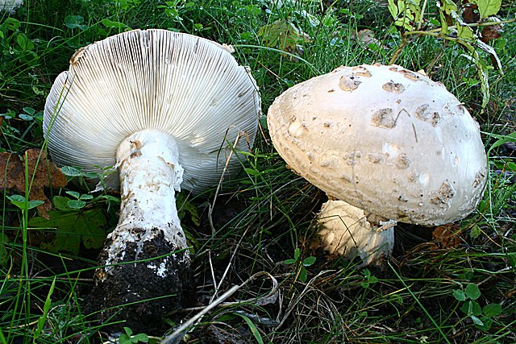

Regnul Fungii (ciupercile)
Ciupercile formeaza al treilea mare regn al organismelor eucariote alaturi de Regnul Animalia si Regnul Plantae cu aproximativ 100.000 de specii cunoscute.
Sunt sedentare, ca si plantele la care au fost incluse de mult timp, dar nu pot practica fotosinteza.
Prin urmare, ele trebuie sa se hraneasca ca animalele prin asimilarea substantelor organice (heterotrofie), pe care insa le absorb din mediu intr-o forma dizolvata. Conform cunoasterii actuale, ciupercile sunt mai strans legate de animale decat de plante.
Regnul include, mai presus de toate, organisme multicelulare din increngatura Basidiomycota, dar si organisme unicelulare, cum ar fi drojdia precum forme sincitice cu multi nuclei celulari, dar fara o subdiviziune celulara.
O denumiere alternativa este Mycota.